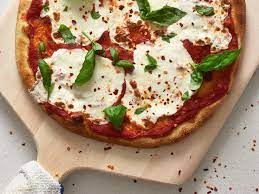

Pizza Margherita

Description
No need to head out for dinner
when you can whip up this 5-star classic pizza at home.
A classic pizza for all the family. Easy and quick to prepare,
guaranteed to be liked by everyone.
Ingredients
- 100ml Mutti Tomato Passata
- 2 tbsp chopped basil leaves,
plus small leaves to garnish
- 1 garlic clove, finely chopped
- 4 bocconcini, sliced 1cm thick
- 2 tbsp freshly grated parmesan
- 8 cherry tomatoes, halved
- Extra virgin olive oil, to drizzle
- 2 cups (300g) strong (baker's) flour,
plus extra to dust
Steps
- Sift flour into a large bowl.
Stir in yeast , sugar and 1 teaspoon salt
- Lightly grease the cleaned bowl with a little oil,
then add dough and cover with a tea towel.
- Preheat oven to 240°C. Knock back the dough by
punching it to remove air and divide into 2 balls.
- Combine passata or sugo with basil and garlic,
then spread over pizza bases leaving a 2cm border.
- Drizzle the pizzas with a little more olive oil,
garnish with small basil leaves then serve immediately.